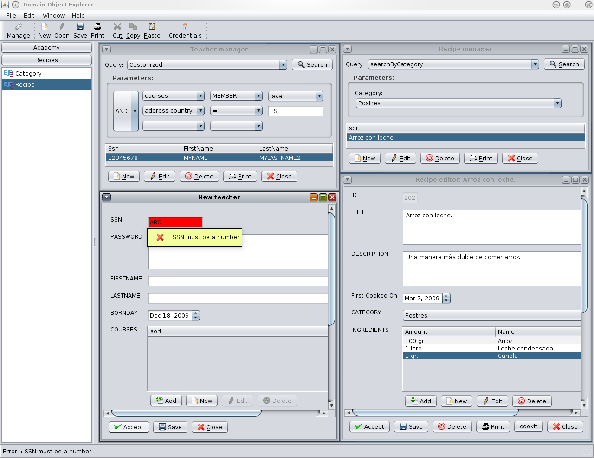

Domain Object Explorer for EJB3 entity beans
|
Domain Object Explorer for EJB3 entity beans
|
The "Domain Object Explorer" is a rich desktop application that auto-generates the user interface for your EJB3 entity beans at runtime, without additional programming (althought it can also be customized by developers). The application can also be centrally managed from application server administrative console (for datasource configuration, deployment of persistence units, and delivery of application/updates via Java Web Start technology).
- Project Name: doe
- Latest Release: None
- Latest Release Status: Pre-Alpha
- Project Type: Java Web Start application client
- License: Common Development and Distribution License (CDDL) Version 1.0
- Features
- Download
- Installation guide
- Usage Instructions
- Screenshot
- Support
- Participation
- Roadmap
- Revision History
- Pros:
- Easy management and testing of EJB3 entity beans.
- Provides a rich user interface without any extra programming.
- Auto-deployment of application and module updates via Java Web Start technology.
- Data sources can be centrally managed from application server administrative console
- Doesn't need complex HTML, JavaScript, nor AJAX handlers on server-side...
- ...
- Cons:
- Only runs on GlassFish v2 (since beta3)
- Deployed aplications are really big (about 40Mb)
- Rude printing support.
- No stable version, yet
- ...
There is no archived release, yet. But you can checkout the following "doe" projects from CVS.Also, there are the following example modules (based on "trails" demos):
- "doe4ejb3" is the core library (it also contains custom annotations for EJB3 entities).
- "doe4ejb3-app-client" is a Java EE 5 application client to be included in the users's enterprise application.
- "doe4ejb3-test-ejb3": sample EJB3 entity beans.
- "doe4ejb3-test-app" : enterprise application with the "doe" application client to manage the previous "EJB3" entities.
- Download, install and start GlassFish v2 application server (important note: "doe" has only been tested with GlassFish v2 build 19, prior versions may not work because of "issue 1173").
- Include the "doe4ejb3-app-client" into your Java EE 5 application.
- Specify EJB3 entity class names in your "META-INF/persistence.xml" descriptors.
- Assemble all modules into an EAR archive, and deploy to the application server.
- Note: if you want to test "doe" with the sample EJB3 entities, you should have to create a database for the tests, configure the connection parameters in GlassFish administration console (the JDBC datasource should be named "jdbc/doe4ejb3"), then open the "doe4ejb3-test-app" project with NetBeans 5.5.1, and deploy into the application server.
- Launch the new deployed "doe4ejb3-app-client" application from GlassFish administrative console.
- See the instructions below.
You can easily launch the "doe" application client from GlassFish administration console (after installation, you can also start it from Java Web Start viewer). The application has the following features:Create a new entity object:
From "File" menu, select "New" option, and the class name of the new EJB3 entity. Then complete the entity properties and press the "Accept" button.Search entity beans:
First, you have to select the persistence unit for the EJB3 entity class, and double click with left button on the desired class to open the entity manager window on the desktop. Then select the query type (to search "All" objects, specify a "Custom" query, or the name of the desired "named query", when defined in the EJB3 entity bean). With "custom" or "named" queries, you also have to complete the required parameters. Finally, press the "Search" button, and wait for the results (note the "done" indicator in the status bar).Browse/edit an object:
You have to select one of the objects found, and click the "Edit" button from the manager window to view the entity details on the right panel (desktop). You can modify it's properties, and press the "Accept" button to save the changes.Print the objects:
Use the "Print" button from the manager/detail window, configure the printing dialog, and click the "Print" button to confirm.Delete an object:
You have to select the object found, click "Delete" button from the manager window, and confirm the deletion in the next window popup.

I hope the "doe" project will be a community-supported open-source product, and you could find support by subscribing to user mailing list offered in this java.net project.
Everybody is welcome to participate in the "doe" project.
The application can sure be improved in many ways.
Any volunteers and suggestions?
Future roadmap for the "doe" application ("to do" task list):
- English corrections and better i18n support (but I don't speak English ;-).
- Improve "GUI" (menus, toolbars, icons, better navigation, allow to create/edit/delete related objects from comboboxes, better custom queries support, fix some copy&paste operations, more drag&drop operations, ...).
- Lazy and bidirectional relations suport (automatic load and linking in both sides)
- Allow user extensions/plugins to add new actions/menus for entity objects.
- Create custom editors for common property types (image viewers/loaders, dates, etc.)
- Better printing support.
- GUI API for customized actions in EJB3 entity beans.
- Load/unload of persistence units.
- More sample applications.
- Version 0.2 - [Alpha version - CVS head]
- Improved UI.
- Cut, copy & paste operations.
- Drag & drop operations.
- Basic printing support.
- Custom queries in search panel.
- Custom actions in entity editor.
- Allows user authentication with database connections managed by client applications.
- Many bug fixes.
- Version 0.1 - [Pre-Alpha version imported in CVS - 2006/09/27]
- Open source release to java.net.
- Simple search/view/edition of EJB3 entity objects.
 Part of the
Java Enterprise Community.
Part of the
Java Enterprise Community.